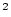
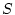
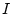
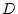
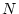

The training/validation methods provide a quantitative measure of the system's
performance based on the accuracy of recognition. The GTk metric for
accuracy is the standard definition that incorporates substitution, insertion,
and deletion errors. Substitution errors occur when the system incorrectly
classifies a gesture. Insertion errors occur when the system hallucinates the
occurrence of a gesture. Deletion errors arise when the system fails to
recognize the occurrence of a gesture within a sequence of gestures. If we let
 represent substitutions errors,  represent insertion errors, 
represent deletion errors, and  represent the total number of examples, then
accuracy is defined as:
System performance is reported in the form of a confusion matrix. The matrix reports the ground-truth gesture versus the gesture as classified by the system.